| Student ID | School | Absences | Final grade |
|---|---|---|---|
| U001 | GP | 6 | 6 |
| U002 | GP | 4 | 6 |
| U003 | GP | 10 | 10 |
| U350 | MS | 10 | 13 |
| U351 | MS | 8 | 8 |
| U352 | MS | 2 | 13 |
Data, Distributions, and Variation
NoteChapter overview
Chapter 1 explained what study observations represent and how they arise. This chapter develops their descriptive use: how to read the recorded data and turn measurements into useful displays and summaries. Its small invented examples make the arithmetic visible before we return to a larger school dataset. A final simulation extends the same ideas of center, spread, and shape to summaries from repeated samples, preparing us to understand statistical uncertainty.
By the end of the chapter you will be able to read a dataset as cases, variables, and values, recognize long and wide layouts, and identify the denominator and sample-selection procedure; see and summarize one distribution by shape, center, and spread, telling a left from a right skew by its long tail; compare groups while keeping their variation visible; connect variable forms to probability models, calculate transformations and Normal areas, and describe a relationship with a graph, covariance, correlation and linear adjustment; interpret each description within its study setting; explain what a sampling distribution and standard error show about repeated samples and how sample size and the sampling design change them; and distinguish one sample’s sampling error from that distribution and its standard error.
Understanding the Dataset
Chapter 1 connected study units and measurement procedures to the observations available for analysis. Here we examine the resulting records: how observations are arranged, what scales and codes mean, and which cases and denominator support each summary. These details turn the study’s account of its evidence into data we can describe.
Schools often want to know whether students with more absences tend to receive lower grades. Before choosing a statistical method, it helps to see what information is actually available.
Our main example uses the mathematics dataset from Cortez and Silva’s student-performance study, based on school reports and questionnaires from two Portuguese secondary schools (Cortez, 2008; Cortez & Silva, 2008). It contains data for 395 students, including their absence counts and final mathematics grades. The repository also provides a separate Portuguese-language dataset; the calculations here use the mathematics data.
We will ask: Among these 395 students, how do recorded absences and final mathematics grades vary together? To answer, we first describe grades on their own, then compare groups and examine relationships. We put that description back into its school setting before asking a related question: how could a summary change if we observed a different sample?
Cases, variables, values, and data layout
A dataset brings together information about people, objects, or measurement occasions. A case is the entity or occasion being described. In this dataset each case is one student. A variable is a feature that can differ across students, such as absences or final grade; a value is the measurement or category for a particular student.
Table 1 shows six selected students. The student IDs are labels added for this tutorial. School codes GP and MS identify the two schools. Reading across U001’s row gives six absences and a final grade of six: the same numeral for two different measurements, a count and a score. Reading down the Absences column compares that count across students. The identifier keeps the two measurements linked to the student they describe.
The two numerical columns can also be written as a data matrix, with one row for each displayed student and one column for each variable. Let \(x_{ij}\) denote the entry in row \(i\) and column \(j\): here \(j=1\) means absences and \(j=2\) final grade. The first index numbers these six displayed rows, rather than their positions in the original dataset. Thus \(x_{31}=10\) absences and \(x_{42}=13\) grade points.
\[ \mathbf X=(x_{ij})= \begin{pmatrix}6&6\\4&6\\10&10\\10&13\\8&8\\2&13\end{pmatrix}, \qquad i=1,\ldots,6,\quad j=1,2. \]
Each column can be summarized separately. The symbol \(\sum\) means to add the indicated entries. For example, the sum for the first column is \(\sum_{i=1}^6 x_{i1}=6+4+10+10+8+2=40\), so its mean is \(40/6=6.6667\) absences. The grade column has mean \(56/6=9.3333\) grade points. These summarize the six displayed cases; the later summaries use all 395 students. In general, for \(n\) rows,
\[ \bar x_j=\frac1n\sum_{i=1}^n x_{ij},\qquad s_j^2=\frac1{n-1}\sum_{i=1}^n(x_{ij}-\bar x_j)^2. \]
The first formula gives a column’s mean. The second gives its sample variance, developed through a small calculation in Section 2.2. This notation organizes numerical entries; identifiers and school labels still have their own meanings and are not quantities to average. For two named variables we can write \(x_i=x_{i1}\) and \(y_i=x_{i2}\). Subscripts have locally stated meanings: an index for a column here can have a different declared use in a later grouped-data calculation.
Chapter 1 distinguished the units a study observes from the occasions on which they are measured. We can recognize that connection in a dataset’s arrangement. Suppose a separate, invented study records a score for each of 120 students at the beginning and end of a term, with both scores observed for every student. There are 120 students and 240 measurement occasions. In a long layout, each row describes one student on one occasion; an occasion column identifies when the score was recorded. In a wide layout, each row describes one student, and separate columns hold the beginning and end scores. Table 2 and Table 3 show the same six invented scores for three of the students.
| Student ID | Occasion | Score |
|---|---|---|
| S001 | Beginning | 52 |
| S001 | End | 58 |
| S002 | Beginning | 61 |
| S002 | End | 64 |
| S003 | Beginning | 47 |
| S003 | End | 53 |
| Student ID | Beginning score | End score |
|---|---|---|
| S001 | 52 | 58 |
| S002 | 61 | 64 |
| S003 | 47 | 53 |
For all 120 students, the long table contains 240 rows and the wide table contains 120 rows. Both contain 240 scores from the same 120 people. The identifier links each student’s two scores, whether they occupy two rows or two columns. Reshaping changes the arrangement while preserving the observations and their connections. The 240 scores describe repeated observations of 120 students. Treating every score as independent would ignore the pairing used to describe change. In longitudinal or panel data, these identifiers let us follow the same people. Repeated cross-sectional data instead describe different samples on successive occasions, so they cannot by themselves show each person’s change. Group identifiers, such as school, can accompany either layout. In our main dataset, each student’s absence count and final grade contribute one pair to the relationship we examine.
Variable forms and roles
Numerical, or quantitative, variables describe amounts. Counts such as absences take discrete values: a student can have two or three counted absences. An absence count also depends on the number of scheduled sessions in its measurement period. Elapsed time can vary continuously, even if a device rounds it to whole seconds. Equal differences in minutes represent equal amounts of elapsed time: from 20 to 25 minutes and from 40 to 45 minutes both add five minutes. Final grades here are discrete numerical scores on a 0–20 scale, recorded in whole points. A one-point difference is a difference on that grading scale; its meaning for learning also depends on what the assessment measures.
Categorical variables place cases in groups. A nominal category, such as school, names a group without ranking it. An ordinal category also has an order, as with low, moderate, and high satisfaction. Numerical codes can represent these categories, but an average of school codes would have no useful meaning. For ordered categories, the spacing between codes need not represent equal differences in the underlying experience.
Variable form helps us choose a description: counts and proportions show how cases fall into categories, while a graph or numerical summary can show the distribution of amounts. Roles come from the question. For the absence–grade question, absences is the predictor and final grade is the outcome. These are the explanatory and response roles developed in Chapter 1, Section 2.1. The roles organize the comparison; the study design determines whether a causal interpretation is justified. School could instead define groups for a comparison of grade distributions.
A codebook explains the variables, their units, coding rules, and measurement periods. Here it identifies the final grade as G3, recorded from 0 to 20, and the second-period grade as G2. We use readable variable names in the calculations while preserving the source values. A binary pass indicator will later distinguish grades of 10 or above from grades below 10.
Coding, missing values, and denominators
A codebook distinguishes a recorded value from its meaning. Zero can be an observed count; a missing value means the intended measurement is unavailable. The UCI documentation reports no missing values, but the joint pattern of zero grades and zero absences needs contextual checking, as Section 3.4 explains.
The analysis sample is the set of cases contributing to a particular calculation. Its denominator can change with the measurements that calculation needs. In a separate invented clinic dataset of 1,240 visits, 36 lack waiting times, 81 lack return statuses, and 10 lack both. The available counts are
\[ n_{\text{wait}}=1240-36=1204,\qquad n_{\text{return}}=1240-81=1159, \]
\[ n_{\text{both}}=1240-(36+81-10)=1133. \]
Adding 36 and 81 counts the 10 visits missing both measurements twice; subtracting that overlap once counts each incomplete visit once. These denominators describe visits, not necessarily distinct patients. Likewise, 20% of sessions and 20% of students answer different questions. Name the contributing cases and measurement period with each summary.
The students observed and the population of interest
Chapter 1 distinguished whom a study’s question concerns from the units that supply its observations. Consider an invented school system that wants to describe all 20,000 students enrolled on a particular date and selects 100 of them. The 20,000 students form the population, the collection about which the system wants to learn; the 100 selected students form its sample. A sample may come from a probability selection process, volunteers, or an available source. How the students enter the sample matters for extending a description to the population.
The next subsection compares selection procedures in this invented system. Section 4 returns to it to examine repeated samples, and Section 4.4 compares two designs with the same sample size. Our 395-student dataset comes instead from two schools. Its source supports a description of these students, while extending the description to all secondary students would need an additional basis.
The distinction is practical. The mean calculated from all 395 supplied grades describes that collection directly. A statement about students elsewhere asks more of the study. For now, we will develop the description first and revisit its scope at the end.
The Student Performance resource is distributed under Creative Commons Attribution 4.0 (Cortez, 2008). This tutorial selects and renames variables, adds identifiers and a pass indicator, and retains the original selected values.
How samples are selected
Chapter 1, Section 3.2 explained how study entry differs from the allocation of conditions among participants. We now make the selection procedure visible in the invented school system. This example lets us compare ways of selecting students; the source of the separate Portuguese dataset does not establish a probability sample of all secondary students.
The school system’s population contains 20,000 eligible students. A sampling frame is the list or other operational record used to identify units for selection: here it could be an up-to-date student register. The sampling design, also called the sampling scheme, specifies how selection proceeds. It can include several stages and use information about the students or their schools.
Chapter 1 introduced random sampling, also called probability sampling. Under such a design, every eligible unit in the population covered by the frame has a known, nonzero chance of inclusion. That unit’s chance of entering the sample is its inclusion probability; the probabilities need not be equal. Coverage matters: if eligible students are absent from the register, random selection from that register cannot select them.
Designs can use groups in different ways. Strata partition the population into defined groups, such as school types, with a sample selected within every stratum. Clusters are groups that can be selected as units, such as schools whose students will be observed. Table 4 compares five probability designs (Statistics Canada, 2021a); its illustrations use our invented school system.
| Scheme | Selection rule | Invented school-system illustration |
|---|---|---|
| Simple random sampling | Every possible sample of the specified size has the same probability. | Select 100 distinct students from the full register, giving every possible set of 100 the same chance. |
| Systematic sampling | Choose a random start, then every \(k\)th unit. | Select a start at random from 1 to 200, then every 200th student on the 20,000-student list. |
| Stratified random sampling | Select a probability sample within every defined stratum. | Divide the register by school type, then randomly select students within each type. |
| Cluster sampling | Select groups through a probability mechanism; in the simplest version, include all eligible units in them. | Randomly select schools from the school list and include all their eligible students. |
| Multistage sampling | Use probability selection at each stage. | Randomly select schools, then randomly select students within each selected school. |
The distinction between simple random and systematic sampling concerns the possible samples. In the systematic design, a random start from 1 to 200 followed by every 200th student gives each student an inclusion probability of \(1/200\). There are only 200 possible samples, one for each starting position. Simple random sampling permits every possible set of 100 students. Equal individual chances alone therefore do not define simple random sampling. The ordering of a systematic-sampling list also matters: a repeating pattern that matches the interval can make the selected students unusually alike.
Stratification samples within every stratum, while cluster sampling selects some clusters. A design can combine these features, such as stratifying schools before selecting schools and then their students.
Convenience sampling might use students available in a nearby classroom. Their inclusion probabilities are not supplied by a probability design (Statistics Canada, 2021b). Similarly, an open invitation describes how volunteers enter a dataset, rather than a probability selection mechanism. After random selection, some selected students may decline to participate. Frame coverage, selection and subsequent nonresponse are distinct parts of the account.
Groups also enter three different parts of a study. Clustered data describe relationships among observations, such as students sharing a school. Cluster sampling selects groups into the sample. Cluster random assignment allocates participating groups to conditions. The same study may use more than one of these features, so identifying grouped observations alone does not establish how groups were selected or assigned.
Selection and dependence matter when a sample supports a population summary. If students have unequal inclusion probabilities, the calculation can require weights to account for how they were selected. If observations are related, their contribution to precision differs from that of independent observations: Section 4.4 shows what selecting schools first and then students within them does to the spread of sample means. Chapter 3 develops uncertainty for paired and clustered observations and for finite-population sampling without replacement. Section 4.1 below repeats the simple random sampling procedure from this overview. Its later waiting-time illustration uses a separate independent-observation model; an SE from that model does not apply unchanged to every sampling scheme.
Describing Distributions and Groups
A distribution describes how a variable’s values are arranged across cases. When it describes observed data, we call it an empirical distribution. We begin with the distribution of final mathematics grades. A graph shows where students’ values cluster and how far they spread; the numerical summaries then give concise descriptions of those features.
See shape before reducing it
A display is useful when its features answer the descriptive question. Table 5 gives a small guide. A histogram counts quantitative values in adjacent intervals; changing the intervals can change the visible shape. A boxplot marks the median inside a box spanning the middle half of the values. In the convention used here, whiskers reach the most extreme observations within 1.5 IQRs of the box ends, and more distant observations appear separately. These are potential outliers to investigate, not automatic errors. The plotting quartiles use R’s convention, which can differ from a hand-calculation convention in a small sample.
| Data and question | Useful display | What to read |
|---|---|---|
| Category frequencies | Bar chart; pie chart for a simple part-to-whole display | Counts or proportions with their denominator; bars ease comparisons |
| Quantitative values | Dot plot or histogram | Individual values or counts in intervals; inspect gaps, tails and bin choices |
| Center and spread across groups | Side-by-side boxplots with points where feasible | Medians, IQRs, overlap and potential outliers |
| Smoothed shape | Density curve | Area across a range; height is not the probability of one exact value |
| Two quantitative variables | Scatterplot | Paired positions; developed in Section 3.2 |
Figure 1 shows how those choices work with invented learning records. Bars ease comparisons between category counts; a pie chart emphasizes shares of a whole. The four displays of completion times use the same sixteen values. A density curve smooths their shape, with the degree of smoothing controlled by a bandwidth. Its height is not the probability of one exact time. Here the smoother is shown only over feasible positive times; it is an exploratory summary rather than a fitted probability law. Individual points keep the observations visible in a small sample.
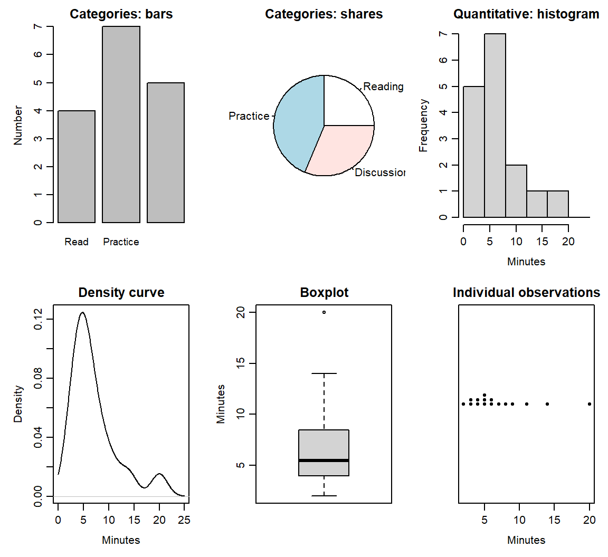
Figure 2 displays all 395 final grades. The graph makes several features visible: the score is bounded between 0 and 20, centered near 11, discrete rather than continuous, and has a visible group at zero.
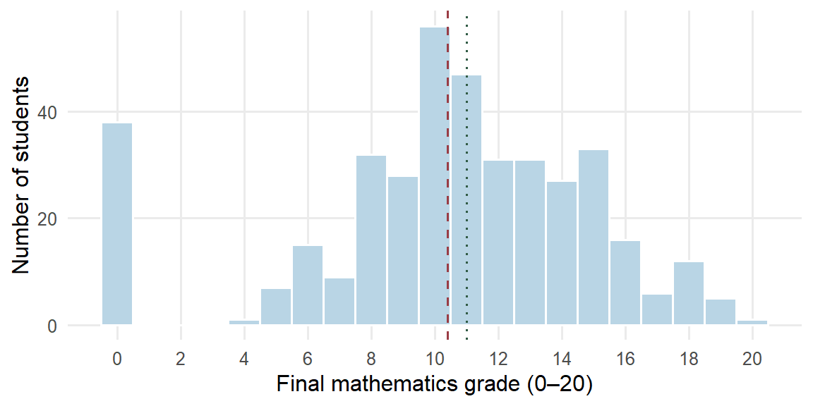
Describe a distribution with four kinds of language:
- Shape: symmetry or skewness, clusters, gaps, and discreteness.
- Center: where a typical or balancing value lies.
- Spread: how widely observations vary.
- Striking patterns and potential outliers: values, clusters or gaps needing contextual checking.
An unusual value is not automatically a mistake. Its recorded meaning and provenance should be investigated before it is changed or removed.
Shape often begins with symmetry. A distribution is skewed when one tail stretches further from the center than the other, and the direction of the skew is named by that longer tail. In a right-skewed (positively skewed) distribution most values sit toward the lower end and the long tail reaches toward larger values, as with waiting times or incomes; in a left-skewed (negatively skewed) distribution the long tail reaches toward smaller values, as with scores on an easy test. The mean usually lies toward the longer tail. Every value contributes to the mean, so a few far values in one tail pull it their way, while the median depends only on the middle position of the ordered values.
Figure 3 shows three invented sets of 300 test scores on a 0–100 scale. In the right-skewed panel the mean, 19.5477, lies above the median, 13.7055. The left-skewed panel reflects those scores, so its mean, 80.4523, lies the same distance below its median, 86.2945; in the symmetric panel the two lines nearly coincide. The ordering is a common pattern rather than a rule: a gap, a second cluster or many tied values on a discrete scale can break it, so read it together with the graph.

The 395 grades in Figure 2 are left-skewed. Their long tail is the separate group of 38 zero grades at the lower bound, and the dashed mean line lies below the dotted median line: the zeros pull the mean down, while the median stays at the middle position. Section 2.3 shows how each summary changes when that group is set aside.
Skewness concerns the balance of the two tails; kurtosis concerns their weight. It compares how much of a distribution lies far from its center with a Normal curve of the same mean and standard deviation, the bell-shaped probability model that Section 2.5 introduces. A distribution with heavier tails than that curve has more values far from the center, and one with lighter tails, such as a flat, evenly spread distribution, has fewer. A symmetric distribution can still have heavy tails, so symmetry and tail weight are separate questions, and kurtosis does not measure how peaked a distribution looks. The grades give a concrete case. Section 2.6 sets them beside a Normal curve with their own mean and SD: the curve expects 6.0136 grades at or below 0.5, yet 38 students have zero grades, so the lower tail is far heavier than the curve’s. Statistical software summarizes the two features with coefficients. Skewness is negative for a left skew, near zero for a symmetric distribution and positive for a right skew; excess kurtosis is near zero for a Normal distribution, positive when the tails are heavier and negative when they are lighter. This chapter reads skew from histograms and tail weight from tail counts set against a Normal curve, and computes neither coefficient.
Five summaries with distinct jobs
We use five summaries to describe center and spread: mean, median, variance, standard deviation, and interquartile range. A small example shows what each one contributes before we write the general formulas.
Consider four invented completion times, already ordered: 1, 3, 3, and 5 minutes. Their sum is \(1+3+3+5=12\). The mean shares that total equally across the four observations, giving \(\bar x=12/4=3\) minutes. The median is the middle of the ordered values: here the two middle observations are both 3, so their average is also 3 minutes.
Quartiles locate the lower and upper quarters of an ordered distribution. The first quartile \(Q_1\) is approximately the 25th percentile and the third quartile \(Q_3\) approximately the 75th. For these small examples, use the median of the lower half and the median of the upper half, excluding the overall middle observation when the number of values is odd. Here,
\[ Q_1=(1+3)/2=2,\qquad Q_3=(3+5)/2=4,\qquad \operatorname{IQR}=4-2=2\text{ minutes}. \]
The interquartile range (IQR) is the width of the middle half of the distribution. Software may interpolate between ordered values instead; the large-data summaries in this chapter use R’s default quartile convention. Different conventions can give slightly different answers in small datasets.
To describe spread around the mean, consider each observation’s deviation: its value minus the mean. The deviations sum to zero because positive and negative distances cancel. Squaring them preserves the contribution of each distance to spread.
| Observation \(x_i\) | Deviation \(x_i-3\) | Squared deviation \((x_i-3)^2\) |
|---|---|---|
| 1 | \(-2\) | 4 |
| 3 | 0 | 0 |
| 3 | 0 | 0 |
| 5 | 2 | 4 |
| Sum | 0 | 8 |
The conventional sample variance divides this sum of squared deviations by \(n-1\), where \(n\) is the number of observations. The sample standard deviation (SD) is its square root:
\[ s^2=\frac{8}{4-1}=\frac83=2.6667\text{ squared minutes},\qquad s=\sqrt{\frac83}=1.633\text{ minutes}. \]
Keep the unrounded variance while taking its square root. Variance expresses spread in squared units; SD returns to the units of the observations and gives a scale for their deviations from the mean.
Why does \(n-1\) appear? Deviations from their own mean must sum to zero. Once the first three deviations \(-2,0,0\) are known, the last must be 2. Only three can vary freely. More generally, estimating the center uses one degree of freedom, leaving \(n-1\). This explains how many deviations can vary freely under the zero-sum constraint. The formula can summarize a fixed set of observed values. Its further role in estimating a population variance, including the sampling reason for this divisor, will be developed with estimation.
We can now write the general formulas. In \(x_1,\ldots,x_n\), the subscript \(i\) identifies an observation. The symbol \(\sum\) means to add the indicated terms: \(\sum_{i=1}^n x_i=x_1+x_2+\cdots+x_n\).
\[ \bar{x}=\frac{1}{n}\sum_{i=1}^{n}x_i,\qquad s^2=\frac{1}{n-1}\sum_{i=1}^{n}(x_i-\bar{x})^2, \]
\[ s=\sqrt{s^2},\qquad \operatorname{IQR}=Q_3-Q_1. \]
For any ordered dataset, the median is the middle observation when \(n\) is odd and the average of the two middle observations when \(n\) is even. Table 7 brings the five summaries together.
| Summary | Interpretive job | Units | Main caution |
|---|---|---|---|
| Mean \(\bar{x}\) | Arithmetic balance point | Original units | Can move strongly with skewness or extreme values |
| Median | Ordered midpoint | Original units | Does not describe spread or tail shape |
| Sample variance \(s^2\) | Squared-deviation spread, using divisor \(n-1\) | Squared units | Harder to interpret directly on the original scale |
| Sample standard deviation \(s\) | Scale of deviation around the mean | Original units | Can be influenced by extreme values |
| IQR | Width of the middle half | Original units | Leaves the tails undescribed |
These five summaries differ from the five-number summary, which lists the minimum, \(Q_1\), median, \(Q_3\), and maximum.
A fixed set of values also has a mean squared deviation obtained by dividing by \(n\): \(8/4=2\) squared minutes here. Both conventions describe spread when clearly named. We use the conventional sample variance throughout, including when describing the 395 grades. The choice of divisor alone says nothing about how the observations were selected. The mean is also the center that makes the sum of squared deviations as small as possible: around 3 the four squared deviations sum to 8, around 4 they sum to \(9+1+1+1=12\), and every other center gives a sum larger than 8.
| Summary | Value | Units |
|---|---|---|
| Mean | 10.4152 | grade points |
| Median | 11.0000 | grade points |
| Sample variance | 20.9896 | squared grade points |
| Sample standard deviation | 4.5814 | grade points |
| IQR | 6.0000 | grade points |
The mean grade is 10.4152 and the median is 11. The variance is 20.9896 squared grade points; SD is 4.5814 grade points, and IQR is 6 grade points. The graph helps us interpret these summaries, particularly the visible group at zero.
Equal means can hide different distributions
Figure 4 shows three invented distributions with the same mean of 10. Their shapes and spreads are plainly different.
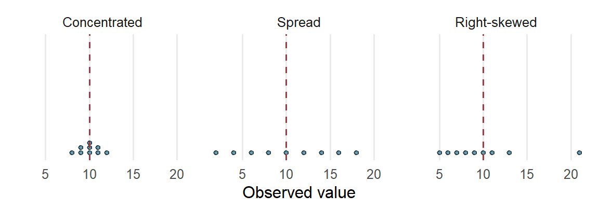
The mean gives a balance point, while the graph shows how the values are arranged around it. Mean and SD are useful when the center and spread around that center serve the question. Median and IQR are resistant summaries: they change relatively little when a small number of extreme values changes. They often describe a skewed distribution more clearly. In either case, the graph supplies information about tails, gaps, and clusters.
The school grades show resistance on real data. The 38 zero grades form a separate cluster below the rest of the distribution (Figure 2). Table 9 compares each summary for all 395 students with the same summary for the 357 students whose grades are above zero. The comparison shows how each summary responds to one cluster. It does not treat the zeros as errors, and the description of all 395 students remains the primary one.
| Summary | All 395 students | 357 without zero grades | Change |
|---|---|---|---|
| Mean | 10.4152 | 11.5238 | 1.1086 |
| Median | 11.0000 | 11.0000 | 0.0000 |
| Sample variance | 20.9896 | 10.4187 | −10.5709 |
| Sample standard deviation | 4.5814 | 3.2278 | −1.3536 |
| IQR | 6.0000 | 5.0000 | −1.0000 |
Removing the cluster raises the mean by more than a grade point and roughly halves the variance; the SD falls from 4.5814 to 3.2278. The median does not move. The IQR narrows by one grade point because the lower quartile rises from 8 to 9: with almost a tenth of the students removed from one end, even a resistant summary shifts a little. Resistance is a matter of degree, and here the median and IQR change far less than the mean and SD. Without the zeros the mean lies above the median, so the left skew of all 395 grades (Section 2.1) comes from that one cluster. Section 3.4 returns to the same 38 students when it examines the absence–grade relationship.
Comparing groups while keeping their variation visible
A single distribution can combine groups with different centers or spreads. In the school data, grades can be displayed separately for students who did and did not report an intention to pursue higher education. Before doing that with 395 students, consider six invented task-completion times from two training groups:
| Group | Completion times (minutes) | Number of learners | Mean (minutes) |
|---|---|---|---|
| A | 1, 3 | 2 | 2 |
| B | 3, 3, 5, 9 | 4 | 5 |
A grouping variable identifies the groups being compared. The two-category variable here is binary, or dichotomous. We can represent it by an indicator, also called a dummy variable: let \(D_i=1\) for Group B and \(D_i=0\) for Group A. In row order,
\[ (D_1,\ldots,D_6)=(0,0,1,1,1,1),\qquad \bar D=\frac46=.6667. \]
The mean of a 0/1 indicator is the proportion in the coded-one category. Reversing the coding changes that category and the direction used for a difference between the group means; the observed groups remain the same. With three or more categories, codes 1, 2 and 3 do not establish quantitative spacing. Later regression uses a declared set of indicators to represent such group membership.
Group B takes three minutes longer on average, but its learners are also more spread out. The dotplot in Figure 5 keeps both features visible. Some learners in different groups have the same time, and the group means summarize rather than replace those observations.
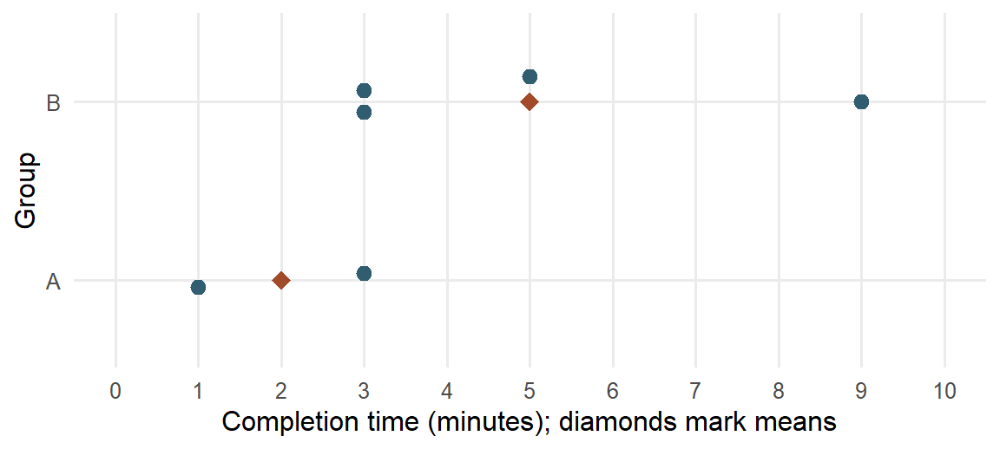
The grand mean is the mean across all six learners:
\[ \bar x=\frac{1+3+3+3+5+9}{6}=\frac{24}{6}=4\text{ minutes}. \]
We can obtain it from the group means too, provided each group receives its learner count as a weight:
\[ \bar x=\frac{2(2)+4(5)}{2+4}=4. \]
The unweighted average \((2+5)/2=3.5\) would give the two groups equal influence despite their different sizes. That answers a different averaging question. When the aim is to describe all learners equally, the larger group contributes more to the grand mean.
There is also variation within each group. For Group A, the squared deviations from 2 are 1 and 1, so its sample variance is \(2/(2-1)=2\) and its SD is 1.4142 minutes. For Group B, deviations from 5 are \(-2,-2,0,4\). Thus,
\[ s_B^2=\frac{4+4+0+16}{4-1}=8,\qquad s_B=\sqrt{8}=2.8284\text{ minutes}. \]
Keeping each group’s spread makes the comparison more informative than reporting two means alone. These calculations describe the groups; they do not assume a common variance.
Finally, one learner’s distance from the grand mean can be understood in two steps. The nine-minute learner belongs to Group B, whose mean is five minutes. That learner is four minutes above the group mean, and the group mean is one minute above the grand mean:
\[ 9-4=(9-5)+(5-4)=4+1=5\text{ minutes}. \]
In words, the total deviation combines the learner’s position within the group and the group’s position relative to the overall mean. This elementary identity prepares the later analysis of between-group and within-group variation. For now, the displays, means, and separate SDs give the descriptive comparison.
The same reasoning applies to the school grades. The dataset records whether each student reported an intention to pursue higher education; this is a reported intention, not eventual enrollment. Figure 6 shows every student’s grade in the two groups, with a boxplot for each group and a diamond at each mean. The dashed line separates passing grades, 10 or above, from the rest, so the share of each group to its right is the passing proportion that Section 3.1 compares.
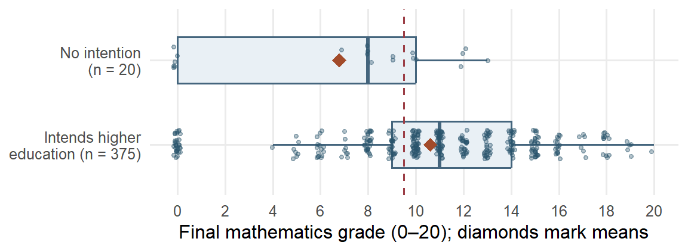
| Group | n | Mean | SD | Median | IQR | Zero grades | Passing |
|---|---|---|---|---|---|---|---|
| No intention | 20 | 6.8000 | 4.8297 | 8 | 10 | 6 (30.0000%) | 35.0000% |
| Intends higher education | 375 | 10.6080 | 4.4934 | 11 | 5 | 32 (8.5333%) | 68.8000% |
| All students | 395 | 10.4152 | 4.5814 | 11 | 6 | 38 (9.6203%) | 67.0886% |
The two distributions differ in more than their centers. The middle half of the 375 students reporting the intention runs from 9 to 14 grade points; the middle half of the 20 without it runs from 0 to 10, and six of those 20, 30.0000%, have zero grades, against 8.5333% of the larger group. The smaller group’s mean of 6.8 lies below its median of 8 because its zeros pull the balance point down. The group means differ by 3.808 grade points, but the small group’s wide spread and its zero cluster belong in the description as well.
The overall mean can be rebuilt from the group means, provided each group receives its size as a weight. With \(j\) indexing the \(J\) groups, \(n_j\) the size of group \(j\) and \(\bar x_j\) its mean, each product \(n_j\bar x_j\) recovers a group’s total:
\[ \bar x=\frac{\sum_{j=1}^{J}n_j\bar x_j}{\sum_{j=1}^{J}n_j} =\frac{20(6.800)+375(10.608)}{20+375} =\frac{136+3978}{395}=\frac{4114}{395}=10.4152 . \]
This equals the mean of all 395 grades in Table 8. The unweighted average of the two group means, \((6.800+10.608)/2=8.704\), gives the 20 students as much influence as the 375: it answers a question about the two groups as groups, not about the students. With groups this unequal the two averages differ by 1.7112 grade points; with equal group sizes they would agree.
Common probability models
An empirical distribution describes recorded observations. A probability model instead describes possible observations and their probabilities. A random variable gives a numerical description of a possible observation: uppercase \(X\) denotes the variable, and lowercase \(x\) an observed or specified value. A categorical observation can be recorded by a label or represented by indicators; arbitrary category codes do not become quantitative measurements.
The model mean, or expectation, \(E(X)\) is a probability-weighted average. With finitely many possible values,
\[ E(X)=\sum_x xP(X=x). \]
For a Bernoulli response, \(X=1\) means correct and \(X=0\) incorrect. If \(P(X=1)=p\), its mean is \(0(1-p)+1p=p\). A correct-response probability of .7 therefore gives a model mean of .7, even though each individual response is either zero or one. The model variance, \(\operatorname{Var}(X)\), describes squared spread around that mean. Table 12 connects several familiar variable forms to useful models (National Institute of Standards and Technology, n.d.). The mathematical properties in the last column describe those models; an observed shape alone does not establish that a model is appropriate.
| Model and support | Meaning and educational example | Parameters and useful properties |
|---|---|---|
| Bernoulli: \(X=0,1\) | One correct/incorrect response | \(P(X=1)=p\); \(E(X)=p\), \(\operatorname{Var}(X)=p(1-p)\) |
| Binomial: \(X=0,\ldots,m\) | Number correct in \(m\) independent trials with common success probability; item heterogeneity can violate the model | \(X\sim\operatorname{Bin}(m,p)\); mean \(mp\), variance \(mp(1-p)\) |
| Categorical: one of \(K\) labels | A student’s selected learning format | Probabilities \(\pi_1,\ldots,\pi_K\) sum to one; each category has an indicator; numerical means of arbitrary labels are not meaningful |
| Poisson: \(X=0,1,\ldots\) | Number of help requests during a specified observation period | \(X\sim\operatorname{Pois}(\lambda)\); mean and variance \(\lambda\); different exposures require explicit treatment |
| Normal: real values | A continuous score model when its symmetric shape is adequate | \(X\sim N(\mu,\sigma^2)\); mean \(\mu\), SD \(\sigma\) |
| Lognormal: positive values | A positive completion time under a multiplicative model | \(\log X\sim N(\mu_{\log},\sigma_{\log}^2)\); median \(\exp(\mu_{\log})\), mean \(\exp(\mu_{\log}+\sigma_{\log}^2/2)\) |
The notation \(\sim\) means “is distributed as.” For example, \(X\sim\operatorname{Bin}(m,p)\) states a Binomial model with \(m\) trials and common success probability \(p\). Here \(m\) counts trials within one modeled observation, while \(n\) counts recorded cases. One Bernoulli trial is a Binomial with \(m=1\) and also a two-category categorical model. A Binomial count has an upper bound \(m\); a Poisson count has no fixed upper bound. Observation periods matter for counts: a help-request rate for one lesson cannot be applied unchanged to a whole term. The Lognormal describes positive values whose logarithms follow a Normal model; its log-scale SD differs from its original-scale SD.
For discrete outcomes, probabilities at the possible values add to one. For a continuous variable, a density curve has total area one, and the probability of a range is its area. A curve height is not a probability at one exact value. Figure 7 shows masses and densities separately. The displayed axes show informative ranges; they do not make a Normal, Lognormal or Poisson tail end at the plot boundary. Positive skew alone establishes none of these models.
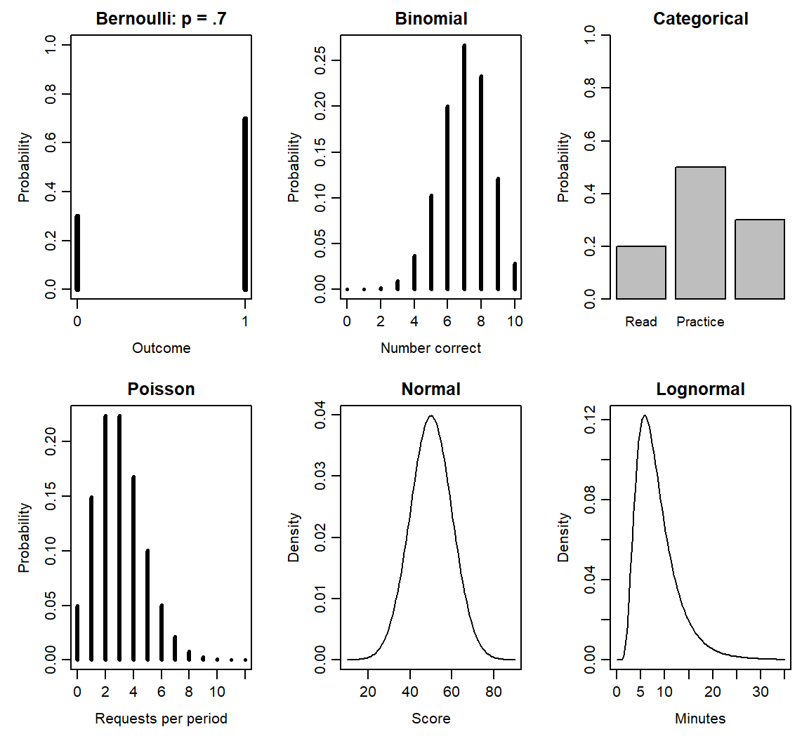
The cumulative distribution function (CDF), \(F(x)=P(X\le x)\), gives the probability up to a specified value. A quantile is a value reaching a stated cumulative probability. These ideas let us ask both “What proportion is below this score?” and “What score marks the upper 5%?” The next subsection works both questions with a Normal model.
A brief preview connects this catalogue to later regression. The logistic distribution is continuous and symmetric, with location \(\mu_L\) and positive scale \(s_L\) (R Core Team, n.d.-b):
\[ F(x)=\frac{1}{1+\exp[-(x-\mu_L)/s_L]},\qquad SD(X)=\frac{\pi s_L}{\sqrt3}. \]
Its scale is therefore different from its SD. With location zero and scale one, its S-shaped CDF is the inverse-logit mapping used in Chapter 11 to turn a linear predictor into a probability. The binary outcome in logistic regression follows a Bernoulli model; it is not itself a continuous logistic variable.
Linear transformations, standardized values, and Normal areas
Changing measurement units connects numerical summaries to the scale on which we read them. Suppose \(w_i=a+bx_i\): every value is multiplied by the same constant \(b\), then shifted by \(a\). Substitution into the mean gives
\[ \bar w=\frac1n\sum_{i=1}^n(a+bx_i) =a+b\bar x. \]
Each deviation becomes \(w_i-\bar w=b(x_i-\bar x)\). Squaring the deviations therefore multiplies their sum by \(b^2\), so
\[ s_w^2=b^2s_x^2,\qquad s_w=|b|s_x. \]
The four completion times 1, 3, 3 and 5 minutes have mean 3 minutes and SD 1.633 minutes. Converting to seconds multiplies the mean by 60 to give 180 seconds and the unrounded SD by 60 to give 97.9796 seconds. Adding a constant moves the center without changing the spread. A negative multiplier reverses the order, while its absolute value scales SD. A zero multiplier produces a constant with zero spread. The corresponding model properties are
\[ E(a+bX)=a+bE(X),\qquad \operatorname{Var}(a+bX)=b^2\operatorname{Var}(X). \]
A standardized score, or z score, expresses distance from a specified mean in SD units. In an invented commute sample with mean 26 minutes and SD 6 minutes, a 38-minute commute gives
\[ z=\frac{38-26}{6}=2. \]
For observed values, \(z_i=(x_i-\bar x)/s\). Subtracting the mean changes the origin and dividing by a positive SD changes the scale. The ordering and shape remain the same; standardizing skewed values leaves them skewed. Standardization is undefined when the SD is zero.
A Normal model supplies the additional information needed for Normal probability calculations. If \(X\sim N(\mu,\sigma^2)\), then
\[ Z=\frac{X-\mu}{\sigma}\sim N(0,1). \]
The standard Normal distribution has mean zero and SD one. Its symmetry and density let us read central probabilities in Figure 8:
\[ P(|Z|\le1)=.6827,\quad P(|Z|\le2)=.9545,\quad P(|Z|\le3)=.9973. \]
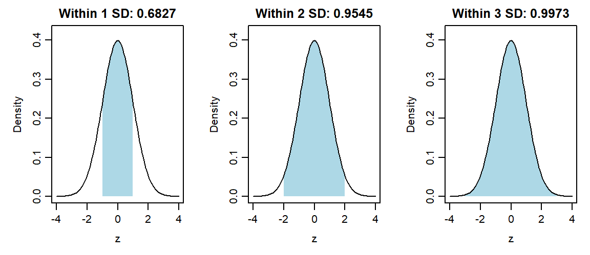
These give the familiar approximate 68%, 95%, 99.7% rule. The exact central 95% range uses approximately \(\pm1.96\) rather than exactly \(\pm2\). Let \(\Phi\) denote the standard Normal CDF and \(\Phi^{-1}\) its quantile function. Under a score model \(X\sim N(50,10^2)\), a score of 65 is \((65-50)/10=1.5\) SDs above the mean. Therefore,
\[ P(X\le65)=P(Z\le1.5)=\Phi(1.5)=.9332. \]
About 93.3193% of values lie at or below 65 under this model. To find the 95th percentile, begin with the standard Normal value \(\Phi^{-1}(.95)=1.6449\) and transform back, retaining its unrounded value during calculation:
\[ x_{.95}=50+10\Phi^{-1}(.95)=66.4485. \]
The subscript on \(x_{.95}\) marks a percentile, rather than a case number. About 95% of the model’s values are at or below 66.4485. The calculations use a supplied probability table or quantile value. Applying them to recorded scores requires a suitable Normal model; computing sample z scores alone does not establish that suitability.
How can we judge whether a Normal model suits recorded scores? Compare what the model predicts with what was observed. For the 395 grades, take the Normal model with the observed mean 10.4152 and SD 4.5814. Figure 9 draws that model’s density over a histogram of the grades, scaled so that bar areas are proportions, and Table 13 compares the shares the model predicts within one, two and three SDs of the mean with the shares observed. Its last row compares the zero grades with the model’s whole lower tail at or below 0.5, which also contains negative values that no grade can take.

| Check | Grade range | Observed students | Observed share | Model share | Model students |
|---|---|---|---|---|---|
| Within 1 SD | 5.8337 to 14.9966 | 276 | .6987 | .6827 | 269.6623 |
| Within 2 SD | 1.2523 to 19.5781 | 356 | .9013 | .9545 | 377.0274 |
| Within 3 SD | −3.3291 to 24.1595 | 395 | 1.0000 | .9973 | 393.9336 |
| Lower tail | At or below 0.5 | 38 | .0962 | .0152 | 6.0136 |
The central share is close to the model’s: the proportion of grades within one SD is .6987, against the model’s .6827. The lower tail differs substantially. Thirty-eight students have zero grades. The model expects only 2.6173 grades in the zero bar of Figure 9 and 6.0136 in its whole lower tail at or below 0.5, a tail that includes probability .0115 below zero, where no grade can occur. The same cluster explains why only .9013 of the grades lie within two SDs rather than .9545: 38 of the 39 grades outside that range are zeros. A Normal model could describe the typical grades reasonably well but would misstate any question about the lowest grades, and standardizing the grades would not change that, since standardization preserves shape. With whole-number grades, read the tail counts rather than small differences between the shares.
Describing and Interpreting Relationships
Describing a relationship means keeping two measurements together. The useful summary depends on what those measurements represent. We first use two categorical variables from the school dataset to show how counts become meaningful percentages. We then return to the chapter’s absence–grade question, which pairs two quantitative variables. The last two subsections interpret the resulting description in the study setting that produced it.
Counts and proportions for two categorical variables
Section 2.4 compared the grades of students who did and did not report an intention to pursue higher education. We now count how many in each group passed. Pass status is defined here as a final mathematics grade of 10 or higher. The following table counts every student once.
| Intends higher education | Passed | Did not pass | Total |
|---|---|---|---|
| No | 7 | 13 | 20 |
| Yes | 258 | 117 | 375 |
| Total | 265 | 130 | 395 |
A two-way frequency table groups cases by two categorical variables. Here the counts tell us that 20 students reported no intention to pursue higher education and 375 reported that intention. Because the groups are so different in size, their raw passing counts are an incomplete comparison.
To compare passing within the two groups, divide each passing count by the size of its own group:
\[ \frac{7}{20}=.350=35.0\%,\qquad \frac{258}{375}=.688=68.8\%. \]
These are conditional proportions: each describes passing among students meeting a stated condition. The difference is
\[ 68.8\%-35.0\%=33.8\text{ percentage points}. \]
Thus the passing proportion is higher among the students reporting a higher-education intention. Percentage points express the subtraction of two percentages; the calculation above is not a relative percentage increase. The left panel of Figure 10 draws the two conditional proportions.
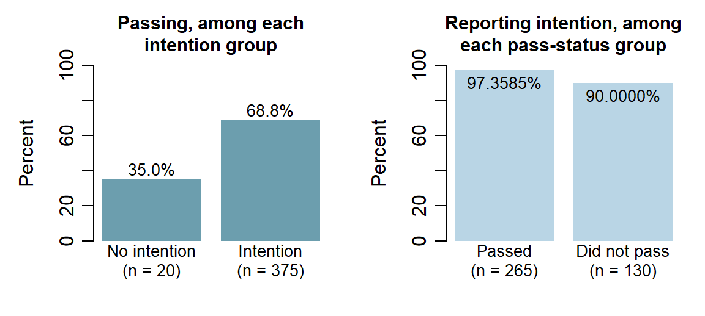
Changing the question changes the denominator. The right panel of Figure 10 conditions on pass status instead: among the 265 passing students, \(258/265=97.3585\%\) reported the intention, and among the 130 who did not pass, \(117/130=90.0000\%\) did. Read this way the two groups look alike, because 375 of the 395 students report the intention whatever their result; read the first way, passing differs sharply between the intention groups. Both panels describe the same table, and the word among names the conditioning group. For reference, \(258/395=65.3165\%\) of all students both report the intention and pass, and overall passing is \(265/395=67.0886\%\). These are descriptions of observed counts. Intention was not randomly assigned, so their difference alone does not establish a causal effect.
Form before coefficient
For two quantitative variables, a scatterplot shows one point for each paired observation. The four invented examples in Figure 11 show how different relationships can look before we summarize them with a coefficient.
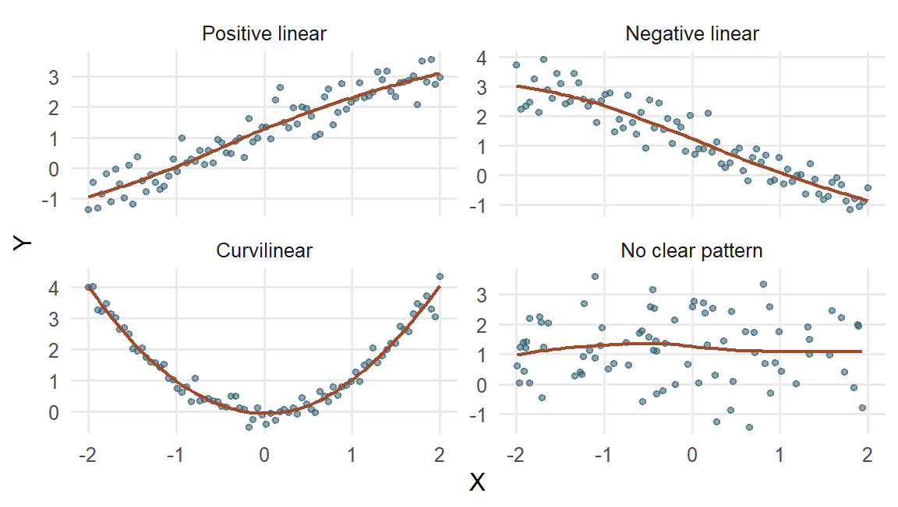
Describe a scatterplot by:
- form: linear, curved, clustered, or otherwise structured;
- direction: increasing, decreasing, or mixed;
- strength: how tightly observations follow the form;
- support: where observations actually occur; and
- unusual observations: points or groups that may change the summary.
Nonlinear or curvilinear describes form. It does not mean random, unimportant, or causal. A strong U-shaped relationship can have Pearson’s correlation near zero because its negative and positive linear tendencies cancel.
Covariance and Pearson’s correlation
Covariance describes how paired deviations vary together. Deviations on the same side of their respective means give a positive product: both values can be above their means or both can be below them. Deviations on opposite sides give a negative product. A value exactly at its mean contributes a zero deviation and hence a zero product.
Consider measurements on four invented learners with \(x=(1,3,3,5)\) practice hours and \(y=(2,2,4,4)\) score points. Both means are 3. The deviations and their products are
\[ x_i-\bar x=(-2,0,0,2),\qquad y_i-\bar y=(-1,-1,1,1), \]
\[ (x_i-\bar x)(y_i-\bar y)=(2,0,0,2). \]
The first pair shows why two below-mean values contribute positively: \((-2)(-1)=2\). The products sum to 4. Dividing by \(n-1=3\) gives the sample covariance \(s_{xy}=4/3=1.3333\) hour-points. The positive value agrees with the pattern: the larger practice values tend to accompany the larger scores.
For any paired observations, the calculation is
\[ s_{xy}=\frac{1}{n-1}\sum_{i=1}^{n} (x_i-\bar{x})(y_i-\bar{y}). \]
Covariance carries the product of the two measurement units. To express the linear relationship on a common, unit-free scale, Pearson’s correlation divides covariance by the two SDs:
\[ r=\frac{s_{xy}}{s_xs_y}. \]
For the four pairs, \(s_x=\sqrt{8/3}\) and \(s_y=\sqrt{4/3}\). Substitution gives
\[ r=\frac{4/3}{\sqrt{8/3}\sqrt{4/3}} =\frac{4}{\sqrt{8\times4}}=0.7071. \]
The units cancel as well: hour-points divided by hours times points is unit-free. If hours become minutes, both covariance and \(s_x\) are multiplied by 60. Covariance becomes \(60(4/3)=80\) minute-points, while \(r\) remains .7071.
The formula also has a useful squared-deviation form:
\[ r=\frac{\sum_i(x_i-\bar{x})(y_i-\bar{y})} {\sqrt{\sum_i(x_i-\bar{x})^2\sum_i(y_i-\bar{y})^2}}. \]
The \(n-1\) factors cancel between covariance and the two SDs. This connection between paired variation and squared deviations will also be useful in regression.
A second connection uses standardized values. With \(z_{xi}=(x_i-\bar x)/s_x\) and \(z_{yi}=(y_i-\bar y)/s_y\),
\[ r=\frac{1}{n-1}\sum_{i=1}^n z_{xi}z_{yi}. \]
Positive standardized products contribute to a positive linear association; negative products contribute to a negative one. The divisor is \(n-1\) because these z scores use sample SDs. Correlation keeps its value under positive rescaling and reverses sign when one scale is reversed. If either SD is zero, the denominator is zero and correlation is undefined.
Correlation cannot leave the range from \(-1\) to 1. Because \(\sum_i z_{xi}^2=\sum_i z_{yi}^2=n-1\) and \(\sum_i z_{xi}z_{yi}=(n-1)r\), expanding the square gives \(\sum_i(z_{xi}-z_{yi})^2=2(n-1)(1-r)\). A sum of squares cannot be negative, so \(r\le1\), and the same argument with \(z_{xi}+z_{yi}\), whose squares sum to \(2(n-1)(1+r)\), gives \(r\ge-1\). The endpoints mark exact lines: \(r\) reaches 1 only when every standardized pair is equal, so the points lie exactly on a rising line, and \(-1\) only when every pair is opposite, so they lie exactly on a falling line.
A correlation of zero can still accompany a perfectly patterned relationship. For five invented pairs with \(y=x^2\), Table 15 works the covariance, with means \(\bar x=0\) and \(\bar y=2\). The two outer pairs contribute \(-4\) and \(+4\), the next two \(+1\) and \(-1\), and the middle pair 0, so the products cancel: covariance and correlation are both 0, although each \(y\) is determined exactly by its \(x\). The U-shaped graph supplies the relationship that the linear coefficient leaves out.
| \(x_i\) | \(y_i=x_i^2\) | \(x_i-\bar x\) | \(y_i-\bar y\) | Product |
|---|---|---|---|---|
| \(-2\) | 4 | \(-2\) | 2 | \(-4\) |
| \(-1\) | 1 | \(-1\) | \(-1\) | 1 |
| 0 | 0 | 0 | \(-2\) | 0 |
| 1 | 1 | 1 | \(-1\) | \(-1\) |
| 2 | 4 | 2 | 2 | 4 |
| Sum | 10 | 0 | 0 | 0 |
| Feature | Sample covariance \(s_{xy}\) | Pearson correlation \(r\) |
|---|---|---|
| What it summarizes | Sum of paired-deviation products divided by \(n-1\) | Standardized linear direction and strength |
| Units | Product of the two variables’ units | None |
| Range | Unbounded; scale dependent | From \(-1\) to \(1\) |
| Effect of changing measurement units | Magnitude changes | Unchanged by positive linear rescaling |
| What it cannot reveal alone | Curvature, clusters, restricted support, or influential observations | The same omissions; near zero is not proof of no relationship |
The graph remains essential: covariance and correlation summarize a linear pattern, while a display shows curvature, clusters, sparse regions, and unusual observations.
Figure 12 makes direction and strength visible on common axes. Each panel contains 80 simulated pairs, and each label reports the correlation actually computed from its displayed points. Moving from a strong negative to a strong positive coefficient changes the linear pattern. The earlier U-shaped example remains a reminder that one linear summary cannot describe every form of relationship.
Different questions can motivate different correlations (R Core Team, n.d.-a). Ranks replace each value by its ordered position. Spearman correlation applies Pearson’s calculation to those ranks, so it can summarize a monotonic pattern that consistently rises or falls without being straight. For Kendall’s coefficient, consider two cases at a time: their ordering is concordant if the case with the higher value of one variable also has the higher value of the other, and discordant if the order reverses. A tie-aware version handles equal values. Table 17 places these summaries beside Pearson’s coefficient.
| Correlation | Useful question | Key qualification |
|---|---|---|
| Pearson \(r\) | How strongly do two quantitative variables follow a linear pattern? | Always inspect their scatterplot and influential values |
| Spearman rank correlation \(r_s\) | Do larger ranks on one variable tend to accompany larger ranks on the other? | Pearson correlation of ranks; describes monotonic rather than specifically linear association |
| Kendall \(\tau_K\) | Do pairs of cases tend to have concordant rather than discordant ordering? | Use a version accounting for ties when needed; its scale is not numerically interchangeable with Pearson’s |
| Point-biserial correlation | How does a quantitative outcome relate to a binary group indicator? | Pearson correlation with a 0/1 variable; reversing the coding reverses its sign |
We use \(\tau_K\) for Kendall’s coefficient to distinguish it from a later mean-difference estimand. Point-biserial correlation is the ordinary Pearson correlation when one variable is coded zero/one; reversing the group coding reverses its sign. A non-Normal histogram by itself does not determine which coefficient answers the relationship question. Inspect the paired pattern, variable meaning and unusual observations before choosing a summary.
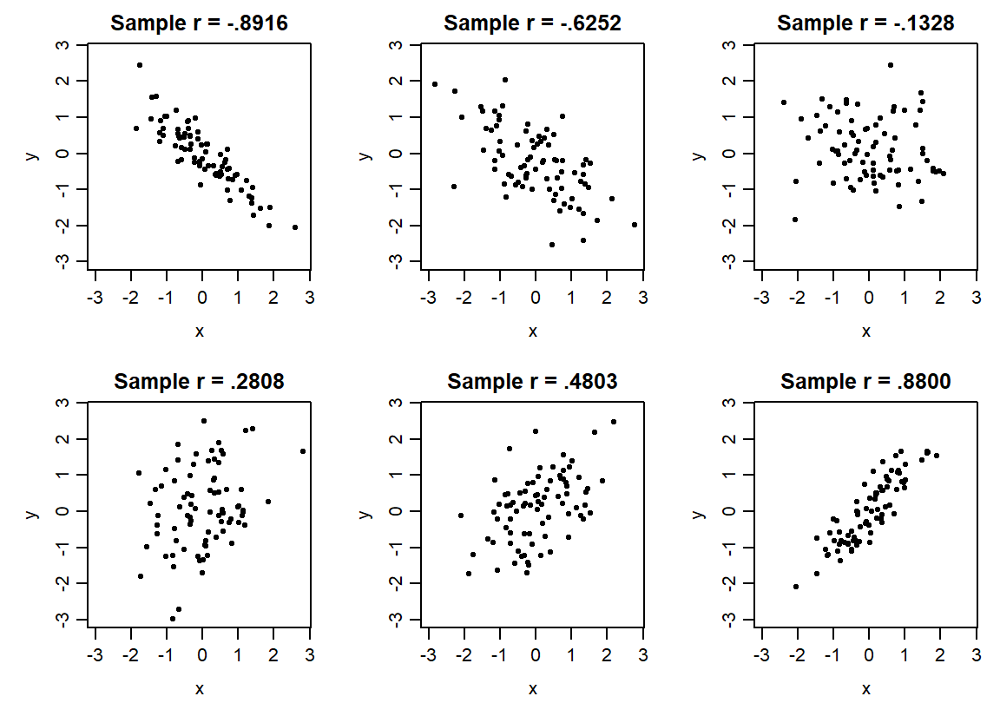
Returning to absences and grades
We can now specify the estimand for the school comparison: the Pearson correlation between recorded absences and final mathematics grade among the 395 students. An estimand is the precisely specified quantity sought by the question. Here it describes the linear relationship in this complete paired dataset.
Figure 13 preserves all 395 paired observations. Jitter makes overlapping integer-valued points visible; it does not change the values used for the coefficient.
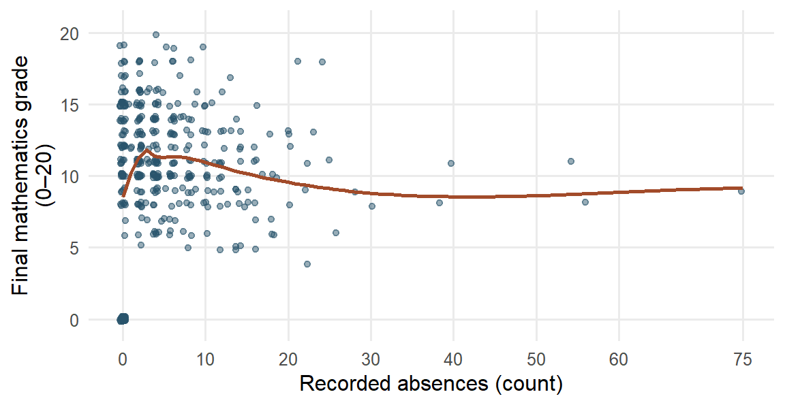
Most students have relatively few recorded absences; a smaller number have much larger counts. The sample covariance is 1.2557 absence-count-by-grade-point units, and Pearson’s \(r=.0342\). The coefficient is positive but small: the overall linear association among these students is close to zero. A smooth is a curve summarizing nearby observations, helping us inspect a relationship’s form. Here it rises from zero absences to the low positive counts, then declines gradually. The high-absence tail contains fewer students and supplies less information about the curve’s shape. The overall linear coefficient and the local curve therefore describe different features of the same data.
Because all 395 pairs defining this estimand are observed, the calculated correlation gives its value for this dataset directly. Coding and measurement questions remain relevant to its meaning. Extending the result to students outside this dataset would require an appropriate sampling design or other explicit basis for that inference.
All 38 zero-grade students also have zero absences; 25 have positive second-period grades from 4 to 10. The accessible codebook leaves this joint pattern unexplained. A sensitivity analysis examines how a result changes when an analytical choice changes. Section 2.3 showed what omitting these 38 records does to each summary of grade (Table 9); for the relationship, it gives \(r=-.2131\) among 357 students, compared with \(.0342\) among all 395. Relative to the original means, the \((0,0)\) observations contribute positive products of deviations; removing them also changes the means used for every remaining deviation.
The omission is a diagnostic of a different record set, rather than evidence that the zeros are errors. Its 357-student correlation describes a different set from the original estimand. We keep the full set primary and use the contrast to show why the unexplained coding pattern matters.
Relationships after linear adjustment
A different descriptive question keeps the same cases and accounts for a third variable. Consider separate, invented summaries of practice time \(x\), final score \(y\), and baseline score \(z\). Suppose the Pearson correlations are \(r_{xy}=.6\), \(r_{xz}=.5\), and \(r_{yz}=.6\), all calculated from the same complete set of students. These are stipulated summary inputs, not correlations from the Portuguese school dataset.
The partial correlation of practice time and final score after linear adjustment for baseline is
\[ r_{xy\cdot z}=\frac{r_{xy}-r_{xz}r_{yz}} {\sqrt{(1-r_{xz}^2)(1-r_{yz}^2)}} =\frac{.6-(.5)(.6)}{\sqrt{(1-.5^2)(1-.6^2)}} =.433. \]
To understand the operation, imagine removing each variable’s fitted straight-line relationship with baseline score, then correlating the two remaining parts. Those remaining parts are residuals. Chapter 7 develops fitted lines and their residual calculations, while Chapter 8 extends the adjustment to several variables. The formula above gives the descriptive calculation directly. In this example, adjustment reduces the correlation from .600 to .433.
The result describes association after this specified linear adjustment. It does not establish a direct causal effect, remove every influence of baseline, repair an ambiguous code or adjust for omitted variables. Choosing what to adjust for depends on the study question and design. A variable along the process from practice to the outcome, or one affected by both quantities, can change or distort the intended comparison when included as a control.
The two descriptions therefore answer different questions: the zero-code check changes the cases being described; partial correlation keeps the same cases and removes their linear relationships with a stated third variable. Neither operation replaces the other.
Interpret and report the relationship
The calculations now give us a description of the school dataset. To explain what it means, we connect the patterns to the way the students were observed and the measurements were made. This develops Chapter 1’s design discussion through the data we have just examined.
Before reporting the relationship, ask what could have produced it. Prior academic difficulty, motivation, or illness could influence both attendance and final performance, providing common-cause explanations of the observed relationship. Earlier low grades might instead lead to disengagement and later absence, illustrating reverse direction. These are possibilities to investigate. The recorded pairs alone do not establish which explanation applies; we need the timing of the absences and assessments and a design that supports the intended comparison. Chapter 1, Section 3.2 explains how sampling and assignment contribute to that design.
Association in a causal comparison need not appear as a nonzero Pearson correlation or a statistically significant result in the sense Chapter 1 defines. A near-zero overall correlation can conceal curvature or different subgroup patterns. Its value summarizes the linear relationship among the recorded measurements; it does not settle what would happen if attendance were changed.
We can now answer the chapter’s question about how absences and grades vary together in this set of students. A near-zero linear correlation cannot settle the effect of changing attendance, and the omission check shows why the coding context matters.
A results paragraph can state both the primary description and the sensitivity:
Among the 395 students recorded in two secondary schools, recorded absences and final mathematics grades showed almost no overall linear association (\(r=.0342\)). Omitting the 38 unexplained zero-grade students as a diagnostic gave a modest negative correlation (\(r=-.2131\)). The interpretation is therefore sensitive to those values. These observational results do not establish the effect of changing attendance or its importance for students in other settings.
Each qualification has a concrete role. The named students identify who was described; linear identifies the feature summarized; the omission check makes the sensitivity visible; and observational connects the interpretation to the design. Rather than repeat a generic caution, explain the particular limitation that matters for the result.
Further investigation would first seek an explanation of the joint zero pattern in the codebook or source records. A newly discovered coding error could be corrected and the calculations repeated with the change documented. A causal question about improving attendance would instead need a design that supports that comparison. These are different research tasks, even when some data can be reused.
From describing these students to learning about others
In the school dataset, no attendance intervention was assigned, and the accessible source does not establish random sampling from all secondary students. These features bound what the results can tell us about changing attendance or describing students elsewhere.
This still leaves a useful task: describing these students accurately. The analysis identifies the grade distribution, a difference in passing proportions, and an absence–grade correlation that changes when a particular set of values is omitted. Each result names what it describes and supplies a starting point for further investigation.
If we instead selected another sample from a defined population, its grades and summaries could differ. We can begin to understand that repeat-to-repeat variation using the same tools we have already used: graphs, means, and standard deviations. The next section makes the repetition explicit, first through an invented school system and then through a simulation whose behavior we can inspect.
From One Sample to Repeated Samples
Until now, our distributions have described measurements from the students or other cases in a dataset. A second kind of distribution describes what happens to a summary when the sample changes. Seeing this distinction is an important step toward understanding uncertainty: a mean calculated from one sample is useful, but another sample could give a different mean.
From one sample to several sample means
Return to the invented school system introduced in Section 1.4 and the selection procedure described in Section 1.5. The system contains 20,000 enrolled students on a specified date. We want their mean grade and select 100 students by simple random sampling without replacement. Each possible set of 100 students has the same chance of selection, and a student can appear only once in that sample. This setting supplies a stated sampling design; it makes no additional claim about the selection of the 395 students in the Portuguese dataset.
The mean grade of all 20,000 students is a parameter: a numerical characteristic of the defined population. It is the estimand for this question. The mean calculated from the 100 selected students is a statistic: a numerical summary calculated from sample data. It provides an estimate of the population mean. The contrast is simple: the population mean is what we want to know, while the sample mean is what we can calculate from the selected students.
Suppose the first sample mean is 10.6 grade points. If we could repeat the same selection process, a second sample might give 11.2 and a third 10.9. These are illustrative values, not results calculated from the Portuguese dataset. The population and its mean stay the same across these imagined selections; the selected students, and therefore the sample means, change. Students selected in one sample can appear again in another, because each repetition starts from the full population.
There are now two different sets of numbers to keep in view. Within the first sample, the 100 individual grades have a distribution. Across repetitions, the sample means 10.6, 11.2, 10.9, and so on have another distribution. A dot in the first distribution represents a student’s grade; a dot in the second represents the mean from an entire sample of 100 students.
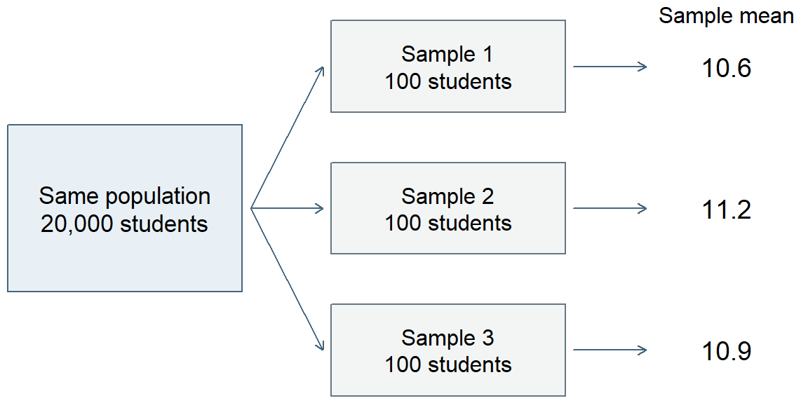
The sampling distribution of a statistic describes its possible values under a specified repetition of the sampling or data-generating process. Here the statistic is the mean, the sample size is 100, and the process is simple random selection from the school system. Naming these features matters: changing the sample size, or selecting schools first and then students within them, would change the repetition we are considering, as Section 4.4 shows.
In practice, researchers usually have one sample. Repeated sampling helps us reason about the variation behind that one result. Simulation makes this idea visible by creating many samples under conditions we have explicitly chosen.
See repeated sampling in a waiting-time model
We now change from bounded grades to waiting times in an invented service where people wait for assistance. The chosen model allows nonnegative waiting times without a fixed upper limit, making a right-skewed distribution and its repeated means easy to inspect. We use an exponential probability model for individual waiting times. This model allows many short waits and occasional long waits, giving a right-skewed distribution. We choose a population mean of 10 minutes and a population SD of 10 minutes. The two values are equal for this particular model; means and SDs generally describe different features and need not be equal.
Each simulated waiting time is generated independently from that same model. This simplifies the example: actual service data might show dependence because several people arrive during the same busy period. The simulation asks what happens under the specified independent process, rather than claiming that all waiting-time data behave this way.
The procedure is straightforward. First generate five waiting times, then calculate their mean. Start afresh and do this 5,000 times, saving one mean from each repetition. Next repeat the procedure with 30 waiting times per sample, and finally with 100. The first panel of Figure 15 shows the model for individual waits; each of the other three summarizes 5,000 sample means, not 5,000 individual waiting times.
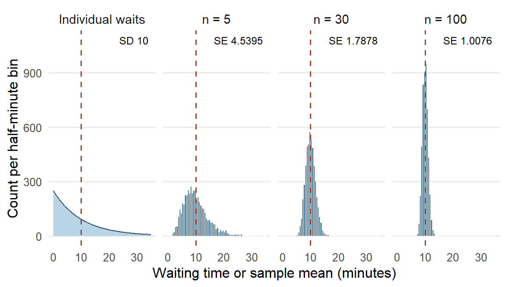
The three distributions of sample means are centered near 10 minutes, the mean built into the model. With only five people per sample, the means vary considerably and the distribution still has a noticeable right tail. One long wait can pull a small sample’s mean upward. With 100 people per sample, individual long waits have less influence on the average, and sample means tend to be closer to 10.
The simulation also connects with the Normal model introduced earlier. The first panel shows that the individual waits stay right-skewed, with SD 10 minutes, at every sample size, while the means concentrate and become more nearly bell-shaped as sample size increases. The variable being graphed has changed: it is now a mean calculated from several waiting times. Neither collecting more cases nor standardizing their values makes the distribution of the individual waiting times Normal.
Standard error as the spread of sample means
We can summarize each histogram just as we summarized grades: find its center and its spread. The mean of the 5,000 sample means describes the center. Their SD describes how much those means vary across the simulated repetitions.
This introduces standard error (SE): the standard deviation of a statistic’s sampling distribution. For a sample mean, SE describes variation among sample means under the specified repetition. In this simulation, the SD of the 5,000 means is an empirical approximation to that SE. Statistical procedures can also calculate or estimate SE from a model and the information in one sample; those calculations build on the meaning we can see here.
| Sample size | Mean of sample means | Empirical SE | Model SE |
|---|---|---|---|
| 5 | 10.0141 | 4.5395 | 4.4721 |
| 30 | 9.9626 | 1.7878 | 1.8257 |
| 100 | 10.0027 | 1.0076 | 1.0000 |
The empirical SE column in Table 18 comes from the simulation. The model SE column gives the corresponding reference values for the independent waiting-time model; the general calculation is developed with statistical inference. Comparing the two columns checks whether the simulation is behaving as expected. Their small differences reflect the finite number of simulation repetitions.
The panel labels of Figure 15 place the two kinds of spread side by side. The 10-minute SD of individual waiting times stays the same whatever the sample size, while the SE of the mean falls from 4.5395 minutes for samples of five to 1.0076 minutes for samples of 100. SD and SE therefore answer different questions: how much do people’s waiting times differ, and how much would the mean differ across samples of the stated size?
It also helps to distinguish SE from the discrepancy in one particular sample. Suppose one sample of 100 has a mean of 11.3 minutes. Because the model’s population mean is known to be 10, this sample’s estimation error is \(11.3-10=1.3\) minutes. Sampling error is the part of an estimate’s departure from the population quantity that arises from observing a sample rather than the whole population. Under this illustration’s stated model, the 1.3-minute departure is attributable to sampling. Other samples can have positive or negative errors. SE describes the spread across those possible results; it is neither the signed error of this one result nor a bound that every error must fall within. In an actual study the population mean is usually unknown, so the exact error of the observed estimate is unknown too.
Coverage, nonresponse, and measurement error are separate sources of error. A missing group in the sampling frame, a selected student’s nonresponse, or an inaccurate measurement can change what an estimate describes. SE characterizes sampling spread under the stated process; it does not encompass every source of error in a study.
Sample size, repetitions, and sampling design
The simulation has two counts with different jobs. Sample size is the number of people whose waits enter one mean: 5, 30, or 100. Number of repetitions is the number of independently generated samples used to display how that mean varies: 5,000 for each condition.
Increasing sample size changes the statistic’s sampling distribution. Each mean combines more observations, and in this independent model its spread becomes smaller. Increasing the number of repetitions gives a clearer picture of the sampling distribution for the existing sample size. For example, generating 20,000 samples of five would make the first histogram smoother and its empirical SE more stable. It would still describe means based on five people, with an SE close to 4.4721 minutes.
The model SE column shows a useful square-root regularity. Moving from 5 to 100 people multiplies sample size by 20, while SE falls from about 4.4721 to 1.0000, a reduction by about \(\sqrt{20}=4.4721\) rather than by 20. Under the same independent model, quadrupling sample size from 100 to 400 would halve SE from 1.0 to 0.5 minute. This explains why substantial gains in precision can require substantial increases in sample size.
These comparisons hold the model and the sampling process constant. Sample size is not, however, the only feature of a design that sets the spread of sample means. Suppose the invented school system’s 20,000 students attend 100 schools of 200 students each, and students in the same school tend to have similar grades. We compare two ways of selecting 100 students: a simple random sample from the whole register, and a multistage sample that randomly selects 4 schools and then 25 students within each selected school. Figure 16 repeats each design 5,000 times from the same invented population.
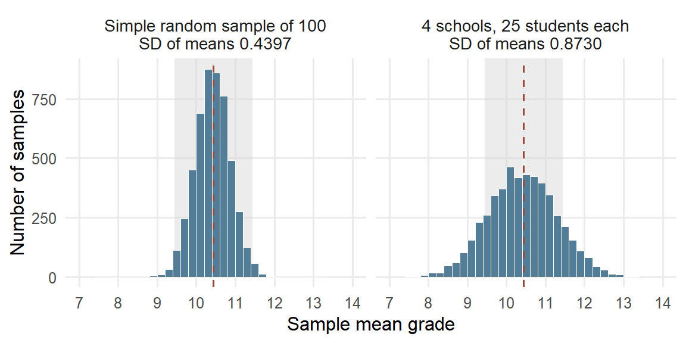
Both designs select 100 students, and both sets of means center on the population mean of 10.4397. Their spreads differ. The multistage means have SD 0.8730, about twice the 0.4397 of simple random samples, and only .7396 of them fall within one grade point of the population mean, against .9778 for simple random samples. Twenty-five students from the same school share that school’s teaching and circumstances, so they supply overlapping information about the whole system.
The intraclass correlation (ICC) describes how strongly units in the same cluster resemble one another: it is the share of the outcome’s variance lying between clusters. Because this invented population is complete, we describe its spread with the mean squared deviation, dividing by the number of values. The total grade variance is 19.5885. Of this, 2.5546 is the variance of the 100 school means around the population mean, and 17.0339 is the average variance of grades around their own school’s mean. The two parts add to the total, just as a deviation split into within-group and group-to-overall parts in Section 2.4. Thus
\[ \mathrm{ICC}=\frac{2.5546}{2.5546+17.0339}=\frac{2.5546}{19.5885}=.1304 . \]
When each selected cluster contributes \(m\) units, the variance of the sample mean is multiplied, relative to a simple random sample of the same size, by about the design effect
\[ \mathrm{deff}=1+(m-1)\,\mathrm{ICC}=1+(25-1)(.1304)=4.1299, \]
calculated from the unrounded ICC. The SE is multiplied by the square root, \(\sqrt{4.1299}=2.0322\), close to the ratio of the two simulated SDs, 1.9856. Put another way, the 100 students carry about as much information about the population mean as \(100/4.1299=24.2137\) students selected independently. The formula shows its two ingredients: when the ICC is 0, or when each cluster contributes a single unit (\(m=1\)), the design effect is 1, and a larger ICC or more units per cluster make it larger. Here \(m\) counts students per selected school, a different quantity from the number of Binomial trials in Section 2.5. Chapter 3, Section 2.3, uses the design effect to calculate the SE of a clustered mean.
The same reasoning applies whenever observations share a source: students in the same class, or patients seen during the same busy period, supply less independent information than the same number of unrelated observations. More cases improve precision but leave a systematic selection problem in place; a very large volunteer sample may describe its volunteers precisely and still differ from the population of interest.
What stabilizes and what becomes more nearly Normal
Returning to the waiting-time panels of Figure 15, two changes are visible as sample size increases, and it helps to describe them separately. First, the means concentrate more closely around 10. Larger samples are less likely to give a mean far from the model’s population mean, because short and long waits tend to balance across many observations. Second, the distribution of sample means becomes more nearly symmetric and bell-shaped, while the individual waits in the first panel stay right-skewed. Shape and spread are different features: a narrow distribution need not be Normal, and a Normal distribution can be wide or narrow.
These are interpretations of one explicitly stated simulation. A sample size such as 30 is not a universal threshold; the behavior depends on the distribution and dependence of the observations. The law of large numbers gives the formal account of the concentration, and the central limit theorem that of the shape, each under its own conditions. Chapter 3 states both results with those conditions and develops the general formulas, using the stated repetition to quantify uncertainty about an estimand from the one sample actually available.
Reading Bridge
This chapter began by reading cases, variables, layouts, denominators, and sample-selection procedures. We then turned measurements into descriptions: the shape, center, and spread of one distribution, with a skew named by its long tail and resistant summaries for a skewed or clustered one; group means with separate spreads and a count-weighted grand mean; conditional proportions for two categorical variables, read in both directions; and a scatterplot with covariance and correlation for two quantitative ones. Grouping indicators made category membership explicit. Probability models describe possible values; standardization and Normal areas connect measurement scales with probabilities, and comparing a model’s predictions with the recorded grades shows where it fits. Partial correlation adds a specified linear adjustment while retaining the same cases.
We then interpreted a description in its study setting and watched the same tools describe sample means under a stated repetition. A sampling distribution shows how a statistic varies, and its standard error describes that spread. One sample’s sampling error is its particular departure attributable to sampling. Larger samples and more simulation repetitions change different things, and the selection design matters too: selecting schools first and then students within them widens the spread of sample means, and the design effect summarizes by how much.
Chapter 3 uses the stated repetition and its conditions to calculate uncertainty for an estimate from one sample, through standard errors, confidence intervals, and tests. Chapter 4 uses group means, deviations, and spread to compare several groups with one-way and two-way analysis of variance.
Key terms
Use this short reference to revisit the main concepts as needed. The Part One Concept Reference gives the broader reference and the principal home of each concept; familiar alternative labels appear there when helpful.
| Term and common alternatives | Meaning |
|---|---|
| Case | The entity or measurement occasion described in a dataset. Depending on the study, a case may be a student, a class, or one measurement occasion for a student. |
| Variable | A characteristic that can take different values across cases or occasions. A dataset records values of one or more variables for its cases. |
| Quantitative variable (numerical variable) | A variable expressing an amount, including continuous measurements and discrete counts or scores. Its units and scale determine what numerical differences mean. |
| Categorical variable | A variable whose values identify categories. Nominal categories have no intrinsic order; ordinal categories have an order; a binary variable has two categories. |
| Population | The collection of units a question concerns. It may be the participating students themselves or a wider collection to which the findings might extend. |
| Sample | A selected set of units from a larger collection. Calling a set a sample does not by itself explain how it was selected or which population it represents. |
| Analysis sample | The units whose data contribute to a particular analysis. Eligibility, missing measurements, and exclusions can make this set and its denominator differ across analyses. |
| Sampling design (sampling scheme) | The specified procedure for selecting a sample, including selection stages, grouping, and, for probability sampling, the selection probabilities. |
| Simple random sampling | Selection in which every possible sample of the specified size has the same probability of being chosen. |
| Empirical distribution (observed distribution; data distribution) | How the observed values are distributed across values or intervals, including their frequencies, center, spread, and shape. A probability model is a separate description of possible values. |
| Skewness and kurtosis (left or negative skew; right or positive skew; tail weight) | Skewness describes asymmetry: in a right (positive) skew the long tail points toward larger values and the mean usually lies above the median; in a left (negative) skew the long tail points toward smaller values and the mean usually lies below the median. Kurtosis describes tail weight relative to a Normal distribution with the same mean and SD, not peakedness. |
| Mean (arithmetic mean) | The sum of the numerical values divided by their count. Every included value contributes, so unusual values can shift the mean. |
| Median | The middle value after ordering the data, or the average of the two middle values when the count is even. It describes the center by position. |
| Quartile | A cut point dividing ordered data into quarters. The first and third quartiles mark approximately the lower and upper edges of the middle half; calculation conventions can differ. |
| Interquartile range (IQR) | The third quartile minus the first quartile: the width of the middle half of the ordered data, expressed in the variable’s original units. |
| Variance | A measure of spread based on squared deviations from the mean. The usual sample variance divides their sum by \(n - 1\) and is expressed in squared units. |
| Standard deviation (SD) | The square root of the variance, expressing spread around the mean in the variable’s original units. Applied to individual observations, it describes variation among their values; applied to a statistic’s sampling distribution, it is the SE. |
| Grand mean | The mean across all included cases. It equals the average of the group means weighted by their group counts, so larger groups contribute more. |
| Degrees of freedom (df) | A count reflecting freely varying information after constraints or fitted quantities are taken into account. The \(n\) deviations from their own mean sum to zero, leaving \(n - 1\) free. |
| Standardized value (z score) | A value minus a specified mean, divided by a specified standard deviation. It expresses distance in SD units; standardizing alone preserves the distribution’s shape. |
| Normal distribution (Gaussian distribution) | A symmetric, bell-shaped probability model described by a mean and standard deviation. The standard Normal has mean zero and SD one; observed data need not follow this model. |
| Conditional proportion | The proportion in one category among cases satisfying a stated condition. Its denominator is the count in that conditioning group, such as students in one education-intention category. |
| Covariance | A summary based on products of paired deviations from the two means. Its sign shows the direction of joint variation; its magnitude depends on both variables’ units and spreads. |
| Pearson’s correlation (Pearson’s r; product-moment correlation) | Covariance divided by the product of the two SDs. For variables with nonzero spread, it describes direction and strength of linear association on a scale from \(-1\) to 1. |
| Sampling distribution | The distribution of a statistic, such as a sample mean, across repeated samples generated by a stated sampling procedure or model. Repeated sample summaries in a simulation approximate this distribution. |
| Sampling error | The part of an estimate’s departure from the population quantity that arises from observing a sample rather than the whole population. It varies across repetitions, and its spread is the SE; coverage, nonresponse, and measurement error are separate. |
| Standard error (SE) | The standard deviation of a statistic’s sampling distribution under a stated sampling procedure or model. It describes spread across repeated sample summaries, distinct from individual-value SD and one sample’s difference from the population quantity. |
| Design effect (deff) | The factor by which a sampling design multiplies the variance of a statistic relative to simple random sampling of the same size. For a mean from equal clusters of \(m\) units it is about \(1+(m-1)\,\mathrm{ICC}\), where the intraclass correlation (ICC) is the share of outcome variance lying between clusters: units in one cluster supply overlapping information. |
| Data matrix | A rectangular arrangement with cases in rows and variables in columns; \(x_{ij}\) denotes case \(i\) on variable \(j\). |
| Binary variable (0/1 coding) | A binary variable has two possible categories; a 0/1 coding marks membership or occurrence. Its sample mean is the proportion coded 1. |
| Linear transformation | \(Y=a+bX\) changes the center to \(a+bE(X)\) and the SD to \(\lvert b\rvert SD(X)\); a negative \(b\) also reverses order. |
| Bernoulli; binomial; categorical; Poisson; lognormal; logistic | Respectively a binary outcome, a count of successes in fixed independent equal-probability trials, one category, an event count under a specified rate model, a positive variable with Normal log, and a continuous symmetric distribution used here as a preview. Logistic regression later models Bernoulli outcomes. |
| Density; cumulative distribution function; quantile | Density determines probability by area for a continuous variable; the CDF gives \(P(X\le x)\); a quantile is a value reaching the stated cumulative probability. |
| Rank correlation; point-biserial correlation | Spearman uses ranks; Kendall summarizes concordance; point-biserial is Pearson correlation with one binary variable coded 0/1. Each addresses a specified relationship. |
| Partial correlation | Correlation between two variables after their linear relationships with stated controls are removed by regression; it describes residual association and does not establish causal adjustment. |
| Parameter | A numerical characteristic of a population or probability model, such as a population mean. A parameter may be the estimand; the question determines which quantity is sought. |
| Statistic | A quantity calculated from sample data, such as a sample mean or proportion. The same statistic can summarize the sample or serve as an estimate for a wider target. |
Further reading
- OpenIntro connects graphical descriptions, numerical summaries, and foundations for inference (Çetinkaya-Rundel & Hardin, 2024).
- The ASA GAISE College Report emphasizes learning statistics through questions, data, analysis, and interpretation (American Statistical Association, 2016).
- Moore, McCabe, and Craig develop the connections among descriptive summaries, sampling, and inference (Moore et al., 2014).
- NIST’s distribution gallery and the R reference explain distribution properties and correlation definitions (National Institute of Standards and Technology, n.d.; R Core Team, n.d.-a, n.d.-b).
- The UCI source supplies the student-performance data and codebook (Cortez, 2008).
- Statistics Canada’s introductory sampling overview compares probability schemes and nonprobability selection (Statistics Canada, 2021a, 2021b).
Exercises
These exercises can be completed by hand with a standard calculator. Each supplies its own data or study description.
Exercise 1: Understand the cases and variables (Foundational)
An invented clinic dataset contains information for individual visits. Some patients have several visits. The variables are patient ID, clinic, visit date, waiting time in minutes, and whether the patient returned within 30 days. Of 1,240 visits, waiting time is missing for 36, return status is missing for 81, and 10 visits are missing both.
Identify:
- the case represented by each observation;
- the observational unit or occasion;
- one identifier, one quantitative variable, and one categorical variable;
- why 1,240 visits should not be described as 1,240 independent patients;
- the error in a report that \(1240-36-81=1123\) visits have both waiting time and return status, and the correct complete-case denominator for an analysis using both; and
- one question that must be answered before generalizing beyond these visits.
Exercise 2: See and summarize one distribution (Foundational)
Eight invented completion times, in minutes, are:
2, 4, 4, 4, 5, 5, 7, 9
- Sketch a dotplot or ordered display. From its shape, predict whether the mean lies above or below the median, and explain why.
- The five summaries of these times are mean 5, median 4.5, sample variance 4.5714, sample standard deviation 2.1381, and IQR 2, with quartiles taken as the medians of the lower and upper halves, 4 and 6. Check your prediction from part 1. Then explain which values the standard deviation and the IQR each use to describe spread.
- State the units of the variance and standard deviation.
- Suppose the 9 should have been recorded as 90. Before recalculating, predict which of the five summaries in part 2 change and which stay the same. Then recalculate the mean only, and use the ordered values to check your prediction for the median and IQR.
- If the question asks for a resistant description of typical time and spread, choose a pair of summaries and explain why, using part 4. Name one feature that the chosen pair does not show.
Exercise 3: Interpret a Normal model and standardized value (Foundational)
A reference model for a score is Normal with mean 50 and standard deviation 10. A learner receives 38.
- Calculate and interpret the learner’s z score.
- Distinguish this model-based standardization from using a sample mean and sample standard deviation.
- Explain why transforming every observed score to z scores would not make a skewed observed distribution Normal.
- A separate invented class of 20 records these quiz scores: 0, 0, 52, 58, 61, 63, 65, 66, 68, 70, 71, 72, 74, 75, 77, 79, 81, 84, 88, 95. Their mean is 64.95 and their SD is 24.468. Count the scores within one SD and within two SDs of the mean, and compare those shares with the Normal values .6827 and .9545. A Normal model with this mean and SD gives \(P(X<40)=.1539\). Would you use that model to describe how many learners scored below 40? Explain, including what the two zeros do.
Exercise 4: Compare a graph, covariance, and correlation (Foundational)
In an invented study, a scatterplot of weekly practice hours and assessment score follows a clear U-shaped curve. The sample covariance is 0.8 hour-points and Pearson’s correlation is .03.
- Why can the graph show a strong relationship while \(r\) is near zero?
- What does the positive sign of the covariance summarize?
- Why is the covariance magnitude not directly comparable across measurement units?
- If hours are converted to minutes, what happens to the covariance and to Pearson’s correlation?
- Write one descriptive sentence that reflects the pattern in the graph.
Exercise 5: Choose the denominator for a categorical comparison (Foundational)
In the mathematics dataset, 375 students reported an intention to pursue higher education: 258 passed and 117 did not. Of the 20 students without that intention, 7 passed and 13 did not. Among students with the intention, 68.8% passed; among those without it, 35.0% passed.
- Name the denominator of each passing percentage, and explain why their difference, 33.8, is a difference in percentage points rather than a 33.8% relative increase.
- Among the 265 students who passed, 97.3585% reported the intention; among the 130 who did not pass, 90.0000% did. Explain why these denominators differ from those in part 1, and why the two pass groups look alike when the counts are read in this direction.
- Suppose, as an invented change, that the dataset had held 200 students without the intention, passing at the same rate of 35%, with the 375 students who reported the intention unchanged. Before calculating, predict which of the four percentages in parts 1 and 2 change. Then calculate the new percentage of passing students who reported the intention, and explain the change.
- Explain why comparing 258 passes with 7 passes alone would be misleading.
- Give one plausible reason for the association other than a causal effect of the reported intention.
Exercise 6: Describe groups and their grand mean (Integrative)
An invented task produces the following completion times, in minutes:
- Group A: 2, 4 (mean 3).
- Group B: 4, 4, 6, 10 (mean 6).
Across all six learners the grand mean is 5 minutes. The sample standard deviations are 1.4142 minutes for Group A and 2.8284 minutes for Group B.
- Display the observations by group and mark each group mean. What does the display show that the two means alone do not?
- Explain, using the group sizes, why the grand mean lies closer to Group B’s mean than to Group A’s.
- Explain why an unweighted average of the two group means gives a different answer.
- Using the standard deviations and your display, describe the difference between the groups in both center and spread. Which time contributes most to Group B’s larger standard deviation?
- Does the difference in group means establish that membership in Group B caused a longer completion time? State the design information you would need.
- Suppose Group B’s times had instead been 5, 6, 6, 7, with Group A unchanged. Before calculating, predict which of the values given above change. Then calculate Group B’s new standard deviation, and explain why the same difference in group means is now easier to see in the display.
Exercise 7: Interpret an incomplete observational dataset (Integrative)
A report asks: “Among 260 volunteers in an online training course, how strong is the linear relationship between logged study minutes and final quiz score?” It documents measurements for each volunteer, 18 missing quiz scores, a Pearson correlation of .41 among 242 complete cases, and a scatterplot showing a moderate positive linear pattern and two volunteers whose study times are much higher than those of the other volunteers. The report concludes: “More study time raises scores for online learners everywhere.” The course platform’s codebook is available, but the recruitment notice and analysis script are not supplied.
- Identify the predictor and outcome, their observational unit, and the group named by the research question. What precisely is the estimand for that group?
- Explain why the calculated correlation uses 242 rather than 260 volunteers. Does it describe the relationship among all 260 without further information or assumptions about the missing scores?
- Interpret \(r=.41\) alongside the scatterplot. Explain what the coefficient summarizes and what inspecting the two unusually high study times could add.
- Identify two things you would seek in the codebook, methods, or analysis details before interpreting the result more broadly. Explain why each would matter.
- Explain the difficulty with “raises scores” and “online learners everywhere.” Which features of the design and participant selection would be needed to support those claims?
- Rewrite the conclusion for the 242 complete cases, preserving the distinction from the original 260-volunteer question and the uncertainty created by the missing scores.
- Suppose checking those two volunteers’ measurements reveals a coding error. Explain how you would correct and report the analysis. How would this differ from asking a new causal question about assigning additional study time?
Exercise 8: Distinguish individual variation from sampling variation (Integrative)
Use the same kind of independent waiting-time model as in Section 4, with population mean and SD both 10 minutes. For this exercise, suppose a simulation generates 5,000 samples of 100 waiting times each and supplies the following illustrative results: the mean of the 5,000 sample means is 10.02 minutes, their SD is 1.01 minutes, and one sample has a mean of 11.3 minutes. These supplied results serve the exercise; the chapter’s particular seeded run has its own reported summaries. The model SE for samples of 100 is 1 minute.
- Identify the population parameter being estimated and the statistic calculated in each sample. What does one value in the simulated sampling distribution represent?
- Explain the different meanings of the individual SD of 10 minutes and the empirical SE of 1.01 minutes. What does comparing 1.01 with the model SE of 1.00 help you check?
- Calculate the estimation error of the sample mean 11.3. Explain how this one error differs from SE, and why its exact value is known in this simulation but usually unknown in a study.
- Under the same independent model, what approximate SE would you expect for samples of 400? Explain using the square-root regularity. What would change instead if you kept sample size at 100 but generated 20,000 simulation repetitions?
- A student concludes that individual waiting times must become Normally distributed when the sample size is large. Use the simulation to distinguish the distribution of individual waits from the distribution of their sample mean.
References
American Statistical Association. (2016). Guidelines for assessment and instruction in statistics education (GAISE) college report 2016. American Statistical Association. https://www.amstat.org/asa/files/pdfs/GAISE/GaiseCollege_Full.pdf
Çetinkaya-Rundel, M., & Hardin, J. (2024). Introduction to modern statistics (2nd ed.). OpenIntro. https://openintro.org/book/ims/
Cortez, P. (2008). Student performance [Dataset]. UCI Machine Learning Repository. https://doi.org/10.24432/C5TG7T
Cortez, P., & Silva, A. M. G. (2008). Using data mining to predict secondary school student performance. In A. Brito & J. Teixeira (Eds.), Proceedings of 5th annual future business technology conference (FUBUTEC 2008) (pp. 5–12). EUROSIS.
Moore, D. S., McCabe, G. P., & Craig, B. A. (2014). Introduction to the practice of statistics (8th ed.). W. H. Freeman.
National Institute of Standards and Technology. (n.d.). Gallery of distributions. Retrieved September 17, 2026, from https://itl.nist.gov/div898/handbook/eda/section3/eda366.htm
R Core Team. (n.d.-a). Correlation, variance and covariance (matrices). Retrieved September 17, 2026, from https://stat.ethz.ch/R-manual/R-patched/library/stats/html/cor.html
R Core Team. (n.d.-b). The logistic distribution. Retrieved September 17, 2026, from https://stat.ethz.ch/R-manual/R-patched/library/stats/html/Logistic.html
Statistics Canada. (2021a). 3.2.2 probability sampling. Statistics: Power from Data! https://www150.statcan.gc.ca/n1/edu/power-pouvoir/ch13/prob/5214899-eng.htm
Statistics Canada. (2021b). 3.2.3 non-probability sampling. Statistics: Power from Data! https://www150.statcan.gc.ca/n1/edu/power-pouvoir/ch13/nonprob/5214898-eng.htm